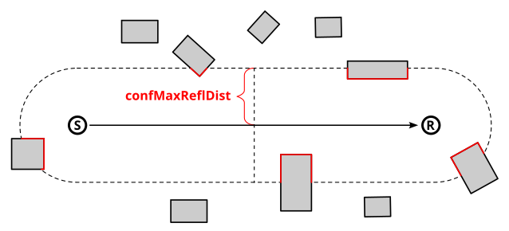
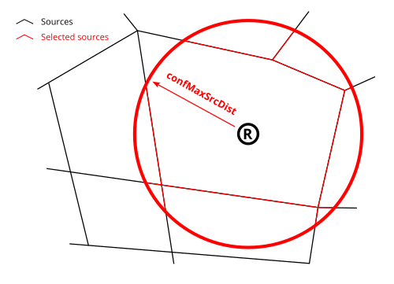

Noise level from traffic
Compute noise level directly from road traffic data
Overview
➡️ Computes Noise map from each period from the traffic flow rate and speed estimates (specific format, see input details). 🌍 Tables must be projected in a metric coordinate system (SRID). Use “Change_SRID” WPS Block if needed. ✅ The output table is RECEIVERS_LEVEL The output tables contain:
IDRECEIVER: an identifier (INTEGER, PRIMARY KEY)
IDSOURCE: an identifier of the source (INTEGER) if keepSource is true
THE_GEOM : the 3D geometry of the receivers (POINT)
PERIOD : time period ex. D, E, N, DEN (Varchar)
Lw63, Lw125, Lw250, Lw500, Lw1000, Lw2000, Lw4000, Lw8000, Laeq, Leq: noise level at receiver (REAL)
Arguments
Mandatory inputs
tableBuilding— Buildings table name🏠 Name of the Buildings table The table must contain:
THE_GEOM : the 2D or 3D geometry of the building (POLYGON or MULTIPOLYGON). If the geometry is 2D then the HEIGHT column is mandatory
HEIGHT : Optional, the height of the building above the ground (mandatory if geometry is 2D, ignored if geometry is 3D) (FLOAT)
Type:
StringtableReceivers— Receivers table nameName of the Receivers table The table must contain:
PK : an identifier. It shall be a primary key (INTEGER, PRIMARY KEY)
THE_GEOM : the 3D geometry of the sources (POINT, MULTIPOINT)
💡 This table can be generated from the WPS Blocks in the “Receivers” folder
Type:
StringtableRoads— Roads table name🛣 Name of the Roads table, traffic can be provided here but are limited to DAY EVENING NIGHT periods This function recognize the following columns (* mandatory):
PK * : an identifier. It shall be a primary key (INTEGER, PRIMARY KEY)
LV_D TV_E TV_N : Hourly average light vehicle count (6-18h)(18-22h)(22-6h) (DOUBLE)
MV_D MV_E MV_N : Hourly average medium heavy vehicles, delivery vans > 3.5 tons, buses, touring cars, etc. with two axles and twin tyre mounting on rear axle count (6-18h)(18-22h)(22-6h) (DOUBLE)
HGV_D HGV_E HGV_N : Hourly average heavy duty vehicles, touring cars, buses, with three or more axles (6-18h)(18-22h)(22-6h) (DOUBLE)
WAV_D WAV_E WAV_N : Hourly average mopeds, tricycles or quads ≤ 50 cc count (6-18h)(18-22h)(22-6h) (DOUBLE)
WBV_D WBV_E WBV_N : Hourly average motorcycles, tricycles or quads > 50 cc count (6-18h)(18-22h)(22-6h) (DOUBLE)
LV_SPD_D LV_SPD_E LV_SPD_N : Hourly average light vehicle speed (6-18h)(18-22h)(22-6h) (DOUBLE)
MV_SPD_D MV_SPD_E MV_SPD_N : Hourly average medium heavy vehicles speed (6-18h)(18-22h)(22-6h) (DOUBLE)
HGV_SPD_D HGV_SPD_E HGV_SPD_N : Hourly average heavy duty vehicles speed (6-18h)(18-22h)(22-6h) (DOUBLE)
WAV_SPD_D WAV_SPD_E WAV_SPD_N : Hourly average mopeds, tricycles or quads ≤ 50 cc speed (6-18h)(18-22h)(22-6h) (DOUBLE)
WBV_SPD_D WBV_SPD_E WBV_SPD_N : Hourly average motorcycles, tricycles or quads > 50 cc speed (6-18h)(18-22h)(22-6h) (DOUBLE)
PVMT : CNOSSOS road pavement identifier (ex: NL05)(default NL08) (VARCHAR)
TEMP_D TEMP_E TEMP_N : Average day, evening, night temperature (default 20℃) (6-18h)(18-22h)(22-6h)(DOUBLE)
TS_STUD : A limited period Ts (in months) over the year where a average proportion pm of light vehicles are equipped with studded tyres (0-12) (DOUBLE)
PM_STUD : Average proportion of vehicles equipped with studded tyres during TS_STUD period (0-1) (DOUBLE)
JUNC_DIST : Distance to junction in meters (DOUBLE)
JUNC_TYPE : Type of junction (k=0 none, k = 1 for a crossing with traffic lights ; k = 2 for a roundabout) (INTEGER)
SLOPE : Slope (in %) of the road section. If the field is not filled in, the LINESTRING z-values will be used to calculate the slope and the traffic direction (way field) will be force to 3 (bidirectional). (DOUBLE)
WAY : Define the way of the road section. 1 = one way road section and the traffic goes in the same way that the slope definition you have used, 2 = one way road section and the traffic goes in the inverse way that the slope definition you have used, 3 = bi-directional traffic flow, the flow is split into two components and correct half for uphill and half for downhill (INTEGER)
💡 This table can be generated from the WPS Block “Import_OSM”
Type:
String
Optional inputs
coefficientVersion— Coefficient version🌧 Cnossos coefficient version (1 = 2015, 2 = 2020)
Type:
IntegerDefault:
2confDiffHorizontal— Diffraction on horizontal edgesCompute or not the diffraction on horizontal edges
Type:
BooleanDefault:
falseconfDiffVertical— Diffraction on vertical edgesCompute or not the diffraction on vertical edges. Following Directive 2015/996, enable this option for rail and industrial sources only
Type:
BooleanDefault:
falseconfExportSourceId— Separate receiver level by source identifierKeep source identifier in output in order to get noise contribution of each noise source. When only the source geometry is given, the attenuation between each pair of “source-receiver” points is specified (commonly referred to as the “attenuation matrix”)
Type:
BooleanDefault:
falseconfFavourableOccurrencesDefault— Probability of occurrencesComma-delimited string containing the probability ([0,1]) of occurrences of favourable propagation conditions. Follow the clockwise direction. The north slice is the last array index (n°16 in the schema below) not the first one

Type:
StringDefault:
0.5, 0.5, 0.5, 0.5, 0.5, 0.5, 0.5, 0.5, 0.5, 0.5, 0.5, 0.5, 0.5, 0.5, 0.5, 0.5confHumidity— Relative humidity🌧 Humidity for noise propagation (%) [0,100]
Type:
DoubleDefault:
70confMaxError— Max Error (dB)Threshold for excluding negligible sound sources in calculations.This parameter is ignored if no emission level is specified or if you set it to 0 dB. This parameter have a great impact on computation time.
Type:
DoubleDefault:
0.1confMaxReflDist— Maximum source-reflexion distanceMaximum search distance of walls / facades from the “Source-Receiver” segment, for the calculation of specular reflections (meters).

Type:
DoubleDefault:
50confMaxSrcDist— Maximum source-receiver distanceMaximum distance between source and receiver (FLOAT, in meters).

Type:
DoubleDefault:
150confMinWallReflDist— Ignore close reflectionsOptional maximum receiver-to-wall distance (meters) below which reflection cut profiles are ignored. With regard to the population’s exposure to noise, it is recommended that the contribution due to reflection off the façade wall of the building where the resident lives should be disregarded. If you have placed the receivers 0.1 m from the façades, you can set this parameter to 0.2 m. This offset is set to ensure that the contribution from the nearby wall is ignored. Use 0 to keep all reflections.
Type:
DoubleDefault:
0confRaysName— Export sceneSave each mnt, buildings and propagation rays into the specified table (ex:RAYS) or file URL (ex: file:///Z:/dir/map.kml) You can set a table name here in order to save all the rays computed by NoiseModelling. The number of rays has been limited in this script in order to avoid memory exception. 🛠
Type:
StringconfReflOrder— Order of reflexionMaximum number of reflections to be taken into account (INTEGER). 🚨 Adding 1 order of reflexion can significantly increase the processing time
Type:
IntegerDefault:
1confTemperature— Air temperature🌡 Air temperature (°C)
Type:
DoubleDefault:
15confThreadNumber— Thread numberNumber of thread to use on the computer (INTEGER). 🛠
Type:
IntegerDefault:
0frequencyFieldPrepend— Frequency field nameFrequency field name prepend. Ex. for 1000 Hz frequency the default column name is HZ1000
Type:
StringDefault:
HZparamWallAlpha— Wall absorption coefficientWall absorption coefficient [0,1] (between
0: “fully reflective” and1: “fully absorbent”)🛠Type:
DoubletableDEM— DEM table nameName of the Digital Elevation Model (DEM) table The table must contain:
THE_GEOM : the 3D geometry of the sources (POINT, MULTIPOINT).
💡 This table can be generated from the WPS Block “Import_Asc_File”
Type:
StringtableGroundAbs— Ground absorption table nameName of the surface/ground acoustic absorption table The table must contain:
THE_GEOM : the 2D geometry of the sources (POLYGON or MULTIPOLYGON)
G : the acoustic absorption of a ground (FLOAT between 0 : very hard and 1 : very soft)
Type:
StringtablePeriodAtmosphericSettings— Atmospheric settings table name for each time periodName of the Atmospheric settings table The table must contain the following columns:
PERIOD : time period (VARCHAR PRIMARY KEY)
WINDROSE : Comma-delimited string containing the probability ([0,1]) of occurrences of favourable propagation conditions. Follow the clockwise direction. The north slice is the last array index (n°16 in the schema below) not the first one.
or DutchD, DutchE, DutchN for Netherlands
TEMPERATURE : Temperature in celsius (FLOAT)
PRESSURE : air pressure in pascal (FLOAT)
HUMIDITY : air humidity in percentage (FLOAT)
GDISC : choose between accept G discontinuity or not (BOOLEAN) default true
PRIME2520 : choose to use prime values to compute eq. 2.5.20 (BOOLEAN) default false
Type:
StringtableRoadsTraffic— Roads traffic table name🛣 Name of the Roads traffic table per period This function recognize the following columns (* mandatory):
IDSOURCE * : an identifier. It shall be linked to the primary key of tableRoads (INTEGER)
PERIOD * : Time period, you will find this column on the output (VARCHAR)
LV : Hourly average light vehicle count (DOUBLE)
MV : Hourly average medium heavy vehicles, delivery vans > 3.5 tons, buses, touring cars, etc. with two axles and twin tyre mounting on rear axle count (DOUBLE)
HGV : Hourly average heavy duty vehicles, touring cars, buses, with three or more axles (DOUBLE)
WAV : Hourly average mopeds, tricycles or quads ≤ 50 cc count (DOUBLE)
WBV : Hourly average motorcycles, tricycles or quads > 50 cc count (DOUBLE)
LV_SPD : Hourly average light vehicle speed (DOUBLE)
MV_SPD : Hourly average medium heavy vehicles speed (DOUBLE)
HGV_SPD : Hourly average heavy duty vehicles speed (DOUBLE)
WAV_SPD : Hourly average mopeds, tricycles or quads ≤ 50 cc speed (DOUBLE)
WBV_SPD : Hourly average motorcycles, tricycles or quads > 50 cc speed (DOUBLE)
PVMT : CNOSSOS road pavement identifier (ex: NL05)(default NL08) (VARCHAR)
TS_STUD : A limited period Ts (in months) over the year where a average proportion pm of light vehicles are equipped with studded tyres (0-12) (DOUBLE)
PM_STUD : Average proportion of vehicles equipped with studded tyres during TS_STUD period (0-1) (DOUBLE)
JUNC_DIST : Distance to junction in meters (DOUBLE)
JUNC_TYPE : Type of junction (k=0 none, k = 1 for a crossing with traffic lights ; k = 2 for a roundabout) (INTEGER)
SLOPE : Slope (in %) of the road section. If the field is not filled in, the LINESTRING z-values will be used to calculate the slope and the traffic direction (way field) will be force to 3 (bidirectional). (DOUBLE)
WAY : Define the way of the road section. 1 = one way road section and the traffic goes in the same way that the slope definition you have used, 2 = one way road section and the traffic goes in the inverse way that the slope definition you have used, 3 = bi-directional traffic flow, the flow is split into two components and correct half for uphill and half for downhill (INTEGER)
Type:
StringtableSourceDirectivity— Source directivity table nameName of the emission directivity table If not specified the default is train directivity of CNOSSOS-EU The table must contain the following columns:
DIR_ID : identifier of the directivity sphere (INTEGER)
THETA : [-90;90] Vertical angle in degree. 0° front 90° top -90° bottom (FLOAT)
PHI : [0;360] Horizontal angle in degree. 0° front 90° right (FLOAT)
LW63, LW125, LW250, LW500, LW1000, LW2000, LW4000, LW8000 : attenuation levels in dB for each octave or third octave (FLOAT)
Type:
String
Output
result— Created tableName of the table containing the results of the computation. Can be used as input for another process.
Type:
String